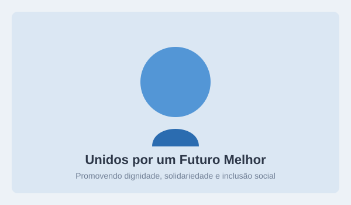
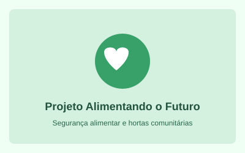
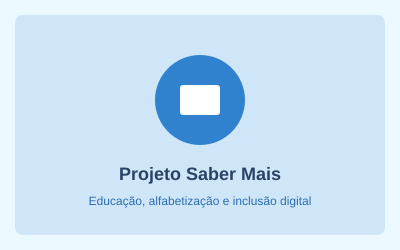
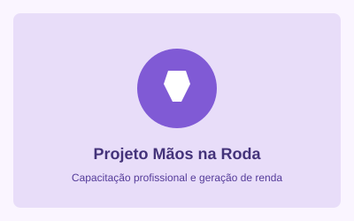

Nossa Missão
Promover a inclusão social e o combate às desigualdades por meio de projetos integrados de alimentação digna, educação básica e qualificação para o mercado de trabalho.
Atuamos há mais de uma década desenvolvendo ações sociais sustentáveis e transformadoras em comunidades em situação de vulnerabilidade.

A ONG Mãos Unidas nasceu do sonho de promover dignidade humana, cidadania e autonomia através do fortalecimento comunitário.
Promover a inclusão social e o combate às desigualdades por meio de projetos integrados de alimentação digna, educação básica e qualificação para o mercado de trabalho.
Ser referência nacional no fomento a comunidades autônomas, reduzindo índices de vulnerabilidade e inspirando novas lideranças comunitárias até 2030.
Conheça as principais iniciativas que estão gerando impacto imediato na vida das famílias cadastradas:

Garantia de segurança alimentar e nutricional para famílias em extrema vulnerabilidade, com foco na infância e terceira idade.

Reforço escolar para crianças do ensino fundamental e oficinas de iniciação digital e pensamento computacional para jovens.

Cursos profissionalizantes gratuitos e mentorias para inserção no mercado formal e estímulo ao microempreendedorismo local.
Resultados acumulados das ações realizadas ao longo do último ano: